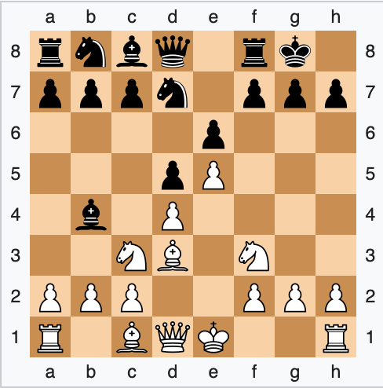
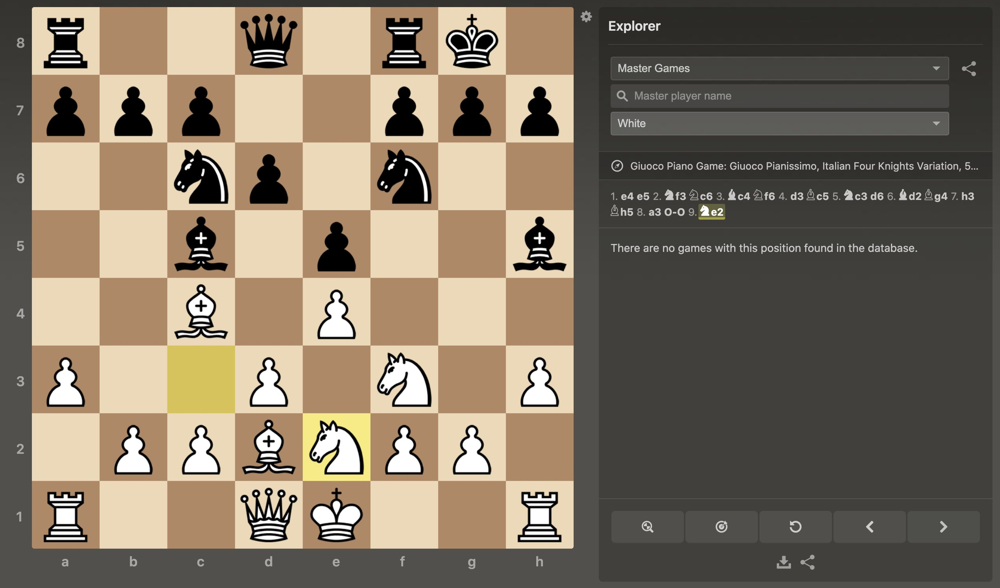
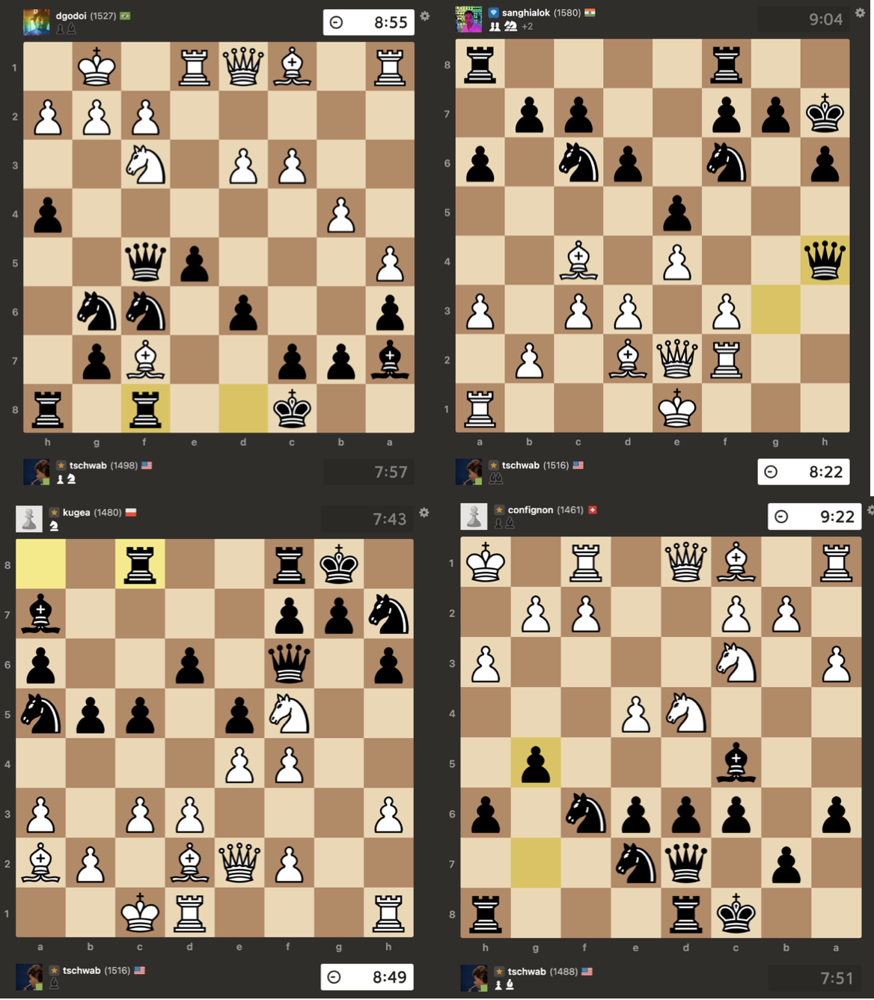

Boring Chess
I've been playing chess since around 2020, spurred on in covid and becoming a casual hobby shortly after.
It has been a long run of inconsistent play between the two main websites for online chess lichess.org and chess.com .
Between the two I've played probably around 3500 games, which if we assume averages at about 10 minutes total, will come out to 583 hours or 24 days of play time.
Fortunately for me, I still feel as though I'm improving after such a large amount of time in game, with my peak being early September 2023.
That rating was on Chess.com at 1794, in the top .5% of players internationally, nearly in the top 100,000 players.
I'm currently floating around mid to low 1600s, just outside the top 2% of players.
The difference between 1600 and 1800, while only 1.5%, is monumental.

What happened in September that pushed my rating to its limits?
I started playing boring chess.
Boring chess — what do I even mean by that? Most people would think all chess is boring,
but after getting comfortable with basic principles, more seasoned players or even beginners would insist on riveting positions.
Cutthroat fights for checkmate, large swings in momentum between players. Unsound gambits like The Meitner Mieses or Evans.
Greek Gift Sacrifice comes up a lot in this early player “exciting” chess, as do positions that overload the queen,
putting her on the frontline to pressure the board.

Sometimes aggressive strategies like this are not only interesting but calculated and objectively winning.
Take a look at the above position which is winning for white following a Greek Gift Sacrifice, Bishop to h7 with check.
What can a person do other than agree? Those positions are riveting — filled with aggression.
The mere forward queen placement is highly intimidating, and (to the untrained eye) front loaded attacking positions appear to benefit the offensive player.
Hans Niemann once even defended a forward placement of his queen in a high level professional game to offset the opponent, with no tangible threats — simply intimidation.

These aggressive positions come with a downside though; they neglect straightforward principles of chess that create strong healthy board positions.
Instead, tempo is spent on the attack — pieces find themselves out of position trying to construct threats that have basic defenses.
The aggression cannot be maintained, and if the defending player can outlast attacks, the resulting positions end up favoring the healthy position.
Chess is not a game that can be won within the first few moves; principles must be observed.
Claiming some of the center with pawns, developing minor pieces, and castling — not all advanced play demands these steps,
but even novice players can begin to understand why positions that neglect these steps are ill-advised.
As I increased my rating slowly but surely, I stopped trying to force exciting initial positions by unsound play.
Around when I was in the 1400s I would play a Giuoco Piano variation I enjoyed that attempted to delay castling until I could castle queenside,
hopefully with an open file to attack down on the kingside. In the position, shown below, you can see that Ne2 attempts to bait out a Bxf3 to open the G file.
A quick pawn to c3 would fully restrain the C6 Knight. The rooks down the open file show too much strength,
and the queen attempting to defend is useless as they bulldoze down the open files.
There are a lot of lines in this opening, and I figured the castling neglect was worth the attacking ability.

Looking through some of the below games is painful, the board is a complete mess in all cases.
It's no surprise in the screenshots I'm rated in the low 1500s/high 1400s.

Clockwise starting from the top left, the links for full games are:
Game 1 -
Game 2 -
Game 3 -
Game 4 -
Let’s be clear though, playing boring chess was not the only thing I did to increase my rating so significantly. It’s not like I was a Meitner Mieses player before that quit the opening cold turkey or some hyper aggressive player that refused to lose a tempo on castling. Another major part of my improvement over the past year has been playing subtle and quiet moves. Moves that do not heavily impact the position that only improve my board state structurally.
My improvement can also be tied to knowing how to play and when. It’s not uncommon to go down a piece and find yourself in a losing position as is the opposite case, when you’re up a piece winning. These pieces may not even be minor pieces like bishops or knights but can even extend to structural sound-ness, or even a simple pawn. Understanding when you’re up or down in a near equal position can help you determine what the best move is. Trading is beneficial when you’re up a minor piece, but up a pawn? That can lead to a small advantage on one side of the board. How can your pieces lean into that advantage and pressure the board that way. On the other hand, going down a piece demands some mature response. You need to understand how to control the speed of the game such that your disadvantage can be minimized. Isolating enemy pieces and finding an aggressive attack in such positions can result in winning positions. If there are enough pieces on the board and your structure is sound enough, then trying to lock into a closed position to time out the opponent is completely viable too.
Resigning in such lost positions is ill advised. Out of my 2,600 Chess.com games, 110 of those are draws. A draw at the 1600 and above level must be pursued rather than a resignation.